import pandas as pd
import numpy as np
# Visulisation
import matplotlib.pyplot as plt
import seaborn as sns
%matplotlib inline
# Sklearn
from sklearn.model_selection import train_test_split
from sklearn.preprocessing import StandardScaler
from sklearn.metrics import classification_report, confusion_matrix
from sklearn.utils.class_weight import compute_class_weight
# Model
import tensorflow as tf
from tensorflow.keras.models import Sequential
from tensorflow.keras.layers import Dense, Dropout, LeakyReLU
from tensorflow.keras.callbacks import EarlyStopping
from tensorflow.keras.optimizers import AdamCharge-Off Prediction With a Neural Network
Python
Pandas
TensorFlow
IMPORTS
—-
There are many LendingClub data sets on Kaggle. Here is the information on this particular data set:
| LoanStatNew | Description | |
|---|---|---|
| 0 | loan_amnt | The listed amount of the loan applied for by the borrower. If at some point in time, the credit department reduces the loan amount, then it will be reflected in this value. |
| 1 | term | The number of payments on the loan. Values are in months and can be either 36 or 60. |
| 2 | int_rate | Interest Rate on the loan |
| 3 | installment | The monthly payment owed by the borrower if the loan originates. |
| 4 | grade | LC assigned loan grade |
| 5 | sub_grade | LC assigned loan subgrade |
| 6 | emp_title | The job title supplied by the Borrower when applying for the loan.* |
| 7 | emp_length | Employment length in years. Possible values are between 0 and 10 where 0 means less than one year and 10 means ten or more years. |
| 8 | home_ownership | The home ownership status provided by the borrower during registration or obtained from the credit report. Our values are: RENT, OWN, MORTGAGE, OTHER |
| 9 | annual_inc | The self-reported annual income provided by the borrower during registration. |
| 10 | verification_status | Indicates if income was verified by LC, not verified, or if the income source was verified |
| 11 | issue_d | The month which the loan was funded |
| 12 | loan_status | Current status of the loan |
| 13 | purpose | A category provided by the borrower for the loan request. |
| 14 | title | The loan title provided by the borrower |
| 15 | zip_code | The first 3 numbers of the zip code provided by the borrower in the loan application. |
| 16 | addr_state | The state provided by the borrower in the loan application |
| 17 | dti | A ratio calculated using the borrower’s total monthly debt payments on the total debt obligations, excluding mortgage and the requested LC loan, divided by the borrower’s self-reported monthly income. |
| 18 | earliest_cr_line | The month the borrower’s earliest reported credit line was opened |
| 19 | open_acc | The number of open credit lines in the borrower’s credit file. |
| 20 | pub_rec | Number of derogatory public records |
| 21 | revol_bal | Total credit revolving balance |
| 22 | revol_util | Revolving line utilization rate, or the amount of credit the borrower is using relative to all available revolving credit. |
| 23 | total_acc | The total number of credit lines currently in the borrower’s credit file |
| 24 | initial_list_status | The initial listing status of the loan. Possible values are – W, F |
| 25 | application_type | Indicates whether the loan is an individual application or a joint application with two co-borrowers |
| 26 | mort_acc | Number of mortgage accounts. |
| 27 | pub_rec_bankruptcies | Number of public record bankruptcies |
—
df = pd.read_csv('lending_club_loan.csv')df.info()<class 'pandas.core.frame.DataFrame'>
RangeIndex: 396030 entries, 0 to 396029
Data columns (total 27 columns):
# Column Non-Null Count Dtype
--- ------ -------------- -----
0 loan_amnt 396030 non-null float64
1 term 396030 non-null object
2 int_rate 396030 non-null float64
3 installment 396030 non-null float64
4 grade 396030 non-null object
5 sub_grade 396030 non-null object
6 emp_title 373103 non-null object
7 emp_length 377729 non-null object
8 home_ownership 396030 non-null object
9 annual_inc 396030 non-null float64
10 verification_status 396030 non-null object
11 issue_d 396030 non-null object
12 loan_status 396030 non-null object
13 purpose 396030 non-null object
14 title 394274 non-null object
15 dti 396030 non-null float64
16 earliest_cr_line 396030 non-null object
17 open_acc 396030 non-null float64
18 pub_rec 396030 non-null float64
19 revol_bal 396030 non-null float64
20 revol_util 395754 non-null float64
21 total_acc 396030 non-null float64
22 initial_list_status 396030 non-null object
23 application_type 396030 non-null object
24 mort_acc 358235 non-null float64
25 pub_rec_bankruptcies 395495 non-null float64
26 address 396030 non-null object
dtypes: float64(12), object(15)
memory usage: 81.6+ MBdf.head()| loan_amnt | term | int_rate | installment | grade | sub_grade | emp_title | emp_length | home_ownership | annual_inc | ... | open_acc | pub_rec | revol_bal | revol_util | total_acc | initial_list_status | application_type | mort_acc | pub_rec_bankruptcies | address | |
|---|---|---|---|---|---|---|---|---|---|---|---|---|---|---|---|---|---|---|---|---|---|
| 0 | 10000.0 | 36 months | 11.44 | 329.48 | B | B4 | Marketing | 10+ years | RENT | 117000.0 | ... | 16.0 | 0.0 | 36369.0 | 41.8 | 25.0 | w | INDIVIDUAL | 0.0 | 0.0 | 0174 Michelle Gateway\nMendozaberg, OK 22690 |
| 1 | 8000.0 | 36 months | 11.99 | 265.68 | B | B5 | Credit analyst | 4 years | MORTGAGE | 65000.0 | ... | 17.0 | 0.0 | 20131.0 | 53.3 | 27.0 | f | INDIVIDUAL | 3.0 | 0.0 | 1076 Carney Fort Apt. 347\nLoganmouth, SD 05113 |
| 2 | 15600.0 | 36 months | 10.49 | 506.97 | B | B3 | Statistician | < 1 year | RENT | 43057.0 | ... | 13.0 | 0.0 | 11987.0 | 92.2 | 26.0 | f | INDIVIDUAL | 0.0 | 0.0 | 87025 Mark Dale Apt. 269\nNew Sabrina, WV 05113 |
| 3 | 7200.0 | 36 months | 6.49 | 220.65 | A | A2 | Client Advocate | 6 years | RENT | 54000.0 | ... | 6.0 | 0.0 | 5472.0 | 21.5 | 13.0 | f | INDIVIDUAL | 0.0 | 0.0 | 823 Reid Ford\nDelacruzside, MA 00813 |
| 4 | 24375.0 | 60 months | 17.27 | 609.33 | C | C5 | Destiny Management Inc. | 9 years | MORTGAGE | 55000.0 | ... | 13.0 | 0.0 | 24584.0 | 69.8 | 43.0 | f | INDIVIDUAL | 1.0 | 0.0 | 679 Luna Roads\nGreggshire, VA 11650 |
5 rows × 27 columns
EXPLORATORY DATA ANALYSIS
sns.countplot(x='loan_status',data=df)
sns.displot(df['loan_amnt'],kde=False)
df.corr(numeric_only=True)| loan_amnt | int_rate | installment | annual_inc | dti | open_acc | pub_rec | revol_bal | revol_util | total_acc | mort_acc | pub_rec_bankruptcies | |
|---|---|---|---|---|---|---|---|---|---|---|---|---|
| loan_amnt | 1.000000 | 0.168921 | 0.953929 | 0.336887 | 0.016636 | 0.198556 | -0.077779 | 0.328320 | 0.099911 | 0.223886 | 0.222315 | -0.106539 |
| int_rate | 0.168921 | 1.000000 | 0.162758 | -0.056771 | 0.079038 | 0.011649 | 0.060986 | -0.011280 | 0.293659 | -0.036404 | -0.082583 | 0.057450 |
| installment | 0.953929 | 0.162758 | 1.000000 | 0.330381 | 0.015786 | 0.188973 | -0.067892 | 0.316455 | 0.123915 | 0.202430 | 0.193694 | -0.098628 |
| annual_inc | 0.336887 | -0.056771 | 0.330381 | 1.000000 | -0.081685 | 0.136150 | -0.013720 | 0.299773 | 0.027871 | 0.193023 | 0.236320 | -0.050162 |
| dti | 0.016636 | 0.079038 | 0.015786 | -0.081685 | 1.000000 | 0.136181 | -0.017639 | 0.063571 | 0.088375 | 0.102128 | -0.025439 | -0.014558 |
| open_acc | 0.198556 | 0.011649 | 0.188973 | 0.136150 | 0.136181 | 1.000000 | -0.018392 | 0.221192 | -0.131420 | 0.680728 | 0.109205 | -0.027732 |
| pub_rec | -0.077779 | 0.060986 | -0.067892 | -0.013720 | -0.017639 | -0.018392 | 1.000000 | -0.101664 | -0.075910 | 0.019723 | 0.011552 | 0.699408 |
| revol_bal | 0.328320 | -0.011280 | 0.316455 | 0.299773 | 0.063571 | 0.221192 | -0.101664 | 1.000000 | 0.226346 | 0.191616 | 0.194925 | -0.124532 |
| revol_util | 0.099911 | 0.293659 | 0.123915 | 0.027871 | 0.088375 | -0.131420 | -0.075910 | 0.226346 | 1.000000 | -0.104273 | 0.007514 | -0.086751 |
| total_acc | 0.223886 | -0.036404 | 0.202430 | 0.193023 | 0.102128 | 0.680728 | 0.019723 | 0.191616 | -0.104273 | 1.000000 | 0.381072 | 0.042035 |
| mort_acc | 0.222315 | -0.082583 | 0.193694 | 0.236320 | -0.025439 | 0.109205 | 0.011552 | 0.194925 | 0.007514 | 0.381072 | 1.000000 | 0.027239 |
| pub_rec_bankruptcies | -0.106539 | 0.057450 | -0.098628 | -0.050162 | -0.014558 | -0.027732 | 0.699408 | -0.124532 | -0.086751 | 0.042035 | 0.027239 | 1.000000 |
plt.figure(figsize=(12,7))
sns.heatmap(df.corr(numeric_only=True),annot=True,cmap='viridis')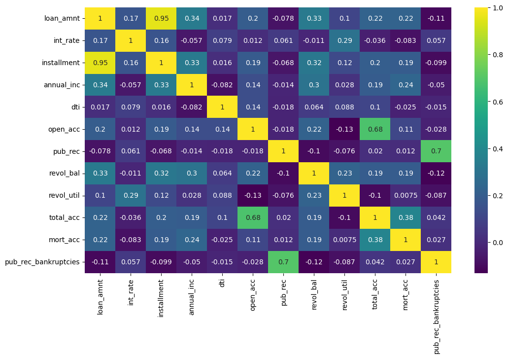
sns.scatterplot(data=df,x='installment',y='loan_amnt')
sns.boxplot(data=df,x='loan_status',y='loan_amnt')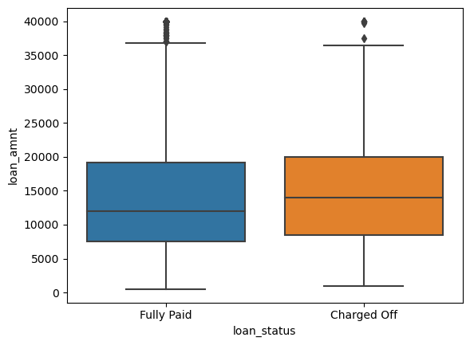
df.groupby('loan_status')['loan_amnt'].describe()| count | mean | std | min | 25% | 50% | 75% | max | |
|---|---|---|---|---|---|---|---|---|
| loan_status | ||||||||
| Charged Off | 77673.0 | 15126.300967 | 8505.090557 | 1000.0 | 8525.0 | 14000.0 | 20000.0 | 40000.0 |
| Fully Paid | 318357.0 | 13866.878771 | 8302.319699 | 500.0 | 7500.0 | 12000.0 | 19225.0 | 40000.0 |
df['grade'].unique()array(['B', 'A', 'C', 'E', 'D', 'F', 'G'], dtype=object)df['sub_grade'].unique()array(['B4', 'B5', 'B3', 'A2', 'C5', 'C3', 'A1', 'B2', 'C1', 'A5', 'E4',
'A4', 'A3', 'D1', 'C2', 'B1', 'D3', 'D5', 'D2', 'E1', 'E2', 'E5',
'F4', 'E3', 'D4', 'G1', 'F5', 'G2', 'C4', 'F1', 'F3', 'G5', 'G4',
'F2', 'G3'], dtype=object)sns.countplot(data=df,x='grade',hue='loan_status')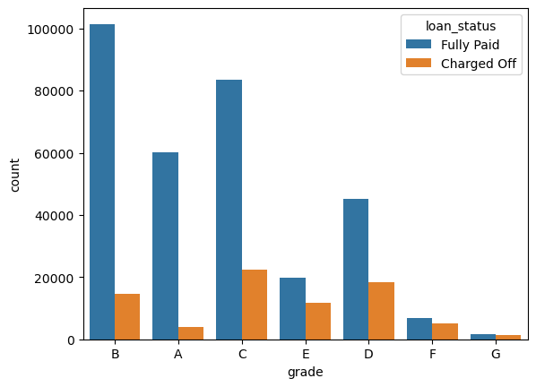
subgrade_order = sorted(df['sub_grade'].unique())
plt.figure(figsize=(12,4))
sns.countplot(data=df,
x='sub_grade',
order=subgrade_order,
palette='coolwarm',
hue='loan_status')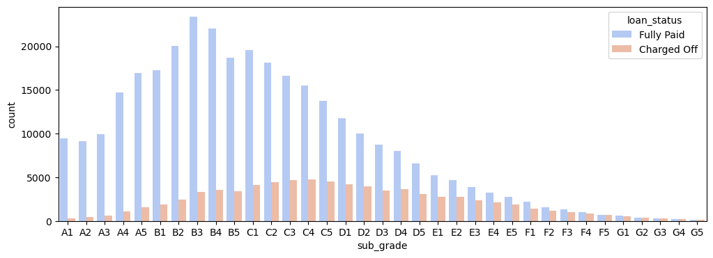
f_g = df[(df['grade'] == 'G') | (df['grade'] == 'F')]
subgrade_order = sorted(f_g['sub_grade'].unique())
plt.figure(figsize=(12,4))
sns.countplot(data=f_g,
x='sub_grade',
order=subgrade_order,
palette='coolwarm',
hue='loan_status')
MISSING VALUES AND FEATURE ENGINEERING
df['loan_repaid'] = (df['loan_status'] == 'Fully Paid').astype(int)
df[['loan_repaid','loan_status']]| loan_repaid | loan_status | |
|---|---|---|
| 0 | 1 | Fully Paid |
| 1 | 1 | Fully Paid |
| 2 | 1 | Fully Paid |
| 3 | 1 | Fully Paid |
| 4 | 0 | Charged Off |
| ... | ... | ... |
| 396025 | 1 | Fully Paid |
| 396026 | 1 | Fully Paid |
| 396027 | 1 | Fully Paid |
| 396028 | 1 | Fully Paid |
| 396029 | 1 | Fully Paid |
396030 rows × 2 columns
df.corr(numeric_only=True)['loan_repaid'].sort_values().drop('loan_repaid').plot(kind='bar')
df.isnull().sum()loan_amnt 0
term 0
int_rate 0
installment 0
grade 0
sub_grade 0
emp_title 22927
emp_length 18301
home_ownership 0
annual_inc 0
verification_status 0
issue_d 0
loan_status 0
purpose 0
title 1756
dti 0
earliest_cr_line 0
open_acc 0
pub_rec 0
revol_bal 0
revol_util 276
total_acc 0
initial_list_status 0
application_type 0
mort_acc 37795
pub_rec_bankruptcies 535
address 0
loan_repaid 0
dtype: int64def percentage_null(df):
percentage_missing = (df.isnull().sum()/len(df))*100
print('\nPercentages of values missing:\n')
print(percentage_missing.round(2))percentage_null(df)
Percentages of values missing:
loan_amnt 0.00
term 0.00
int_rate 0.00
installment 0.00
grade 0.00
sub_grade 0.00
emp_title 5.79
emp_length 4.62
home_ownership 0.00
annual_inc 0.00
verification_status 0.00
issue_d 0.00
loan_status 0.00
purpose 0.00
title 0.44
dti 0.00
earliest_cr_line 0.00
open_acc 0.00
pub_rec 0.00
revol_bal 0.00
revol_util 0.07
total_acc 0.00
initial_list_status 0.00
application_type 0.00
mort_acc 9.54
pub_rec_bankruptcies 0.14
address 0.00
loan_repaid 0.00
dtype: float64df['title']0 Vacation
1 Debt consolidation
2 Credit card refinancing
3 Credit card refinancing
4 Credit Card Refinance
...
396025 Debt consolidation
396026 Debt consolidation
396027 pay off credit cards
396028 Loanforpayoff
396029 Toxic Debt Payoff
Name: title, Length: 396030, dtype: objectdf['purpose']0 vacation
1 debt_consolidation
2 credit_card
3 credit_card
4 credit_card
...
396025 debt_consolidation
396026 debt_consolidation
396027 debt_consolidation
396028 debt_consolidation
396029 debt_consolidation
Name: purpose, Length: 396030, dtype: objectdf = df.drop('title',axis=1)emp_title and emp_length
df['emp_title']0 Marketing
1 Credit analyst
2 Statistician
3 Client Advocate
4 Destiny Management Inc.
...
396025 licensed bankere
396026 Agent
396027 City Carrier
396028 Gracon Services, Inc
396029 Internal Revenue Service
Name: emp_title, Length: 396030, dtype: objectdf['emp_title'].nunique()173105df = df.drop('emp_title', axis=1)df['emp_length']0 10+ years
1 4 years
2 < 1 year
3 6 years
4 9 years
...
396025 2 years
396026 5 years
396027 10+ years
396028 10+ years
396029 10+ years
Name: emp_length, Length: 396030, dtype: objectsorted(df['emp_length'].dropna().unique())['1 year',
'10+ years',
'2 years',
'3 years',
'4 years',
'5 years',
'6 years',
'7 years',
'8 years',
'9 years',
'< 1 year']ordered_emp_lengths = ['< 1 year',
'1 year',
'2 years',
'3 years',
'4 years',
'5 years',
'6 years',
'7 years',
'8 years',
'9 years',
'10+ years']plt.figure(figsize=(12,5))
sns.countplot(data=df,
x='emp_length',
order=ordered_emp_lengths,
palette='viridis')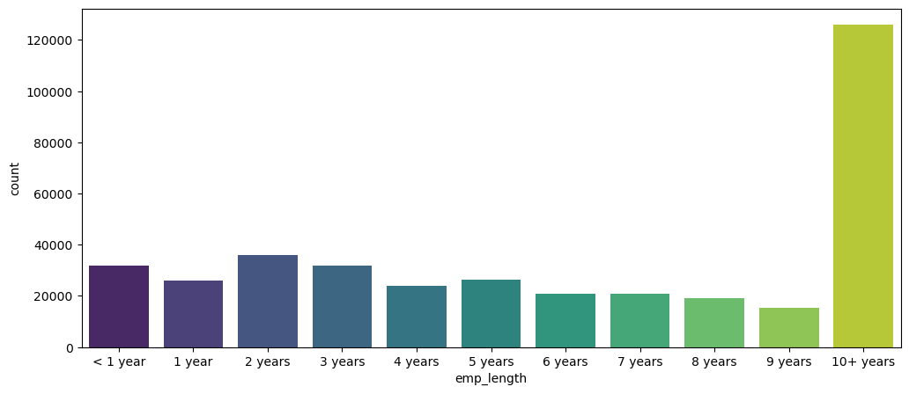
plt.figure(figsize=(12,5))
sns.countplot(data=df,
x='emp_length',
order=ordered_emp_lengths,
hue='loan_repaid')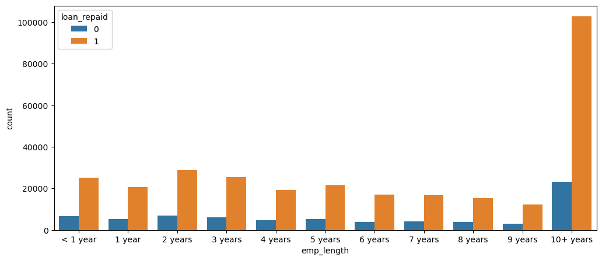
emp_co = df[df['loan_repaid'] == 0].groupby('emp_length').count()['loan_repaid']
emp_fp = df[df['loan_repaid'] == 1].groupby('emp_length').count()['loan_repaid']
plt.figure(figsize=(6,2))
((emp_co/(emp_fp+emp_co))*100).plot(kind='bar')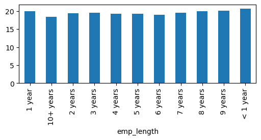
df = df.drop('emp_length',axis=1)Filling mort_acc using total_acc
percentage_null(df)
Percentages of values missing:
loan_amnt 0.00
term 0.00
int_rate 0.00
installment 0.00
grade 0.00
sub_grade 0.00
home_ownership 0.00
annual_inc 0.00
verification_status 0.00
issue_d 0.00
loan_status 0.00
purpose 0.00
dti 0.00
earliest_cr_line 0.00
open_acc 0.00
pub_rec 0.00
revol_bal 0.00
revol_util 0.07
total_acc 0.00
initial_list_status 0.00
application_type 0.00
mort_acc 9.54
pub_rec_bankruptcies 0.14
address 0.00
loan_repaid 0.00
dtype: float64df['mort_acc'].value_counts()mort_acc
0.0 139777
1.0 60416
2.0 49948
3.0 38049
4.0 27887
5.0 18194
6.0 11069
7.0 6052
8.0 3121
9.0 1656
10.0 865
11.0 479
12.0 264
13.0 146
14.0 107
15.0 61
16.0 37
17.0 22
18.0 18
19.0 15
20.0 13
24.0 10
22.0 7
21.0 4
25.0 4
27.0 3
32.0 2
31.0 2
23.0 2
26.0 2
28.0 1
30.0 1
34.0 1
Name: count, dtype: int64df.corr(numeric_only=True)['mort_acc'].sort_values()int_rate -0.082583
dti -0.025439
revol_util 0.007514
pub_rec 0.011552
pub_rec_bankruptcies 0.027239
loan_repaid 0.073111
open_acc 0.109205
installment 0.193694
revol_bal 0.194925
loan_amnt 0.222315
annual_inc 0.236320
total_acc 0.381072
mort_acc 1.000000
Name: mort_acc, dtype: float64total_acc_avgs = df.groupby('total_acc').mean(numeric_only=True)['mort_acc']def fill_mort_acc(total_acc,mort_acc):
if np.isnan(mort_acc):
return total_acc_avgs[total_acc]
else:
return mort_accdf['mort_acc'] = df.apply(lambda x: fill_mort_acc(x['total_acc'],x['mort_acc']),axis=1)df.isnull().sum()loan_amnt 0
term 0
int_rate 0
installment 0
grade 0
sub_grade 0
home_ownership 0
annual_inc 0
verification_status 0
issue_d 0
loan_status 0
purpose 0
dti 0
earliest_cr_line 0
open_acc 0
pub_rec 0
revol_bal 0
revol_util 276
total_acc 0
initial_list_status 0
application_type 0
mort_acc 0
pub_rec_bankruptcies 535
address 0
loan_repaid 0
dtype: int64percentage_null(df)
Percentages of values missing:
loan_amnt 0.00
term 0.00
int_rate 0.00
installment 0.00
grade 0.00
sub_grade 0.00
home_ownership 0.00
annual_inc 0.00
verification_status 0.00
issue_d 0.00
loan_status 0.00
purpose 0.00
dti 0.00
earliest_cr_line 0.00
open_acc 0.00
pub_rec 0.00
revol_bal 0.00
revol_util 0.07
total_acc 0.00
initial_list_status 0.00
application_type 0.00
mort_acc 0.00
pub_rec_bankruptcies 0.14
address 0.00
loan_repaid 0.00
dtype: float64df = df.dropna()percentage_null(df)
Percentages of values missing:
loan_amnt 0.0
term 0.0
int_rate 0.0
installment 0.0
grade 0.0
sub_grade 0.0
home_ownership 0.0
annual_inc 0.0
verification_status 0.0
issue_d 0.0
loan_status 0.0
purpose 0.0
dti 0.0
earliest_cr_line 0.0
open_acc 0.0
pub_rec 0.0
revol_bal 0.0
revol_util 0.0
total_acc 0.0
initial_list_status 0.0
application_type 0.0
mort_acc 0.0
pub_rec_bankruptcies 0.0
address 0.0
loan_repaid 0.0
dtype: float64Categorical Features
df.select_dtypes(['object']).columnsIndex(['term', 'grade', 'sub_grade', 'home_ownership', 'verification_status',
'issue_d', 'loan_status', 'purpose', 'earliest_cr_line',
'initial_list_status', 'application_type', 'address'],
dtype='object')df['term'].value_counts()term
36 months 301247
60 months 93972
Name: count, dtype: int64df['term'] = df['term'].apply(lambda x: int(x.split()[0]))df['term']0 36
1 36
2 36
3 36
4 60
..
396025 60
396026 36
396027 36
396028 60
396029 36
Name: term, Length: 395219, dtype: int64df['zip_code'] = df['address'].apply(lambda address: address[-5:])df['zip_code'].value_counts()zip_code
70466 56880
22690 56413
30723 56402
48052 55811
00813 45725
29597 45393
05113 45300
11650 11210
93700 11126
86630 10959
Name: count, dtype: int64df['home_ownership'].value_counts()home_ownership
MORTGAGE 198022
RENT 159395
OWN 37660
OTHER 110
NONE 29
ANY 3
Name: count, dtype: int64df['home_ownership'] = df['home_ownership'].replace(['NONE','ANY'],'OTHER')df['home_ownership'].value_counts()home_ownership
MORTGAGE 198022
RENT 159395
OWN 37660
OTHER 142
Name: count, dtype: int64columns_to_1hot = ['home_ownership',
'verification_status',
'application_type',
'initial_list_status',
'purpose',
'zip_code',
'sub_grade']df = pd.get_dummies(data=df,
columns=columns_to_1hot,
drop_first=True,
dtype=int)df.columnsIndex(['loan_amnt', 'term', 'int_rate', 'installment', 'grade', 'annual_inc',
'issue_d', 'loan_status', 'dti', 'earliest_cr_line', 'open_acc',
'pub_rec', 'revol_bal', 'revol_util', 'total_acc', 'mort_acc',
'pub_rec_bankruptcies', 'address', 'loan_repaid',
'home_ownership_OTHER', 'home_ownership_OWN', 'home_ownership_RENT',
'verification_status_Source Verified', 'verification_status_Verified',
'application_type_INDIVIDUAL', 'application_type_JOINT',
'initial_list_status_w', 'purpose_credit_card',
'purpose_debt_consolidation', 'purpose_educational',
'purpose_home_improvement', 'purpose_house', 'purpose_major_purchase',
'purpose_medical', 'purpose_moving', 'purpose_other',
'purpose_renewable_energy', 'purpose_small_business',
'purpose_vacation', 'purpose_wedding', 'zip_code_05113',
'zip_code_11650', 'zip_code_22690', 'zip_code_29597', 'zip_code_30723',
'zip_code_48052', 'zip_code_70466', 'zip_code_86630', 'zip_code_93700',
'sub_grade_A2', 'sub_grade_A3', 'sub_grade_A4', 'sub_grade_A5',
'sub_grade_B1', 'sub_grade_B2', 'sub_grade_B3', 'sub_grade_B4',
'sub_grade_B5', 'sub_grade_C1', 'sub_grade_C2', 'sub_grade_C3',
'sub_grade_C4', 'sub_grade_C5', 'sub_grade_D1', 'sub_grade_D2',
'sub_grade_D3', 'sub_grade_D4', 'sub_grade_D5', 'sub_grade_E1',
'sub_grade_E2', 'sub_grade_E3', 'sub_grade_E4', 'sub_grade_E5',
'sub_grade_F1', 'sub_grade_F2', 'sub_grade_F3', 'sub_grade_F4',
'sub_grade_F5', 'sub_grade_G1', 'sub_grade_G2', 'sub_grade_G3',
'sub_grade_G4', 'sub_grade_G5'],
dtype='object')df['earliest_cr_line']0 Jun-1990
1 Jul-2004
2 Aug-2007
3 Sep-2006
4 Mar-1999
...
396025 Nov-2004
396026 Feb-2006
396027 Mar-1997
396028 Nov-1990
396029 Sep-1998
Name: earliest_cr_line, Length: 395219, dtype: objectdf['earliest_cr_year'] = df['earliest_cr_line'].apply(lambda x: int(x.split('-')[-1]))df['earliest_cr_year']0 1990
1 2004
2 2007
3 2006
4 1999
...
396025 2004
396026 2006
396027 1997
396028 1990
396029 1998
Name: earliest_cr_year, Length: 395219, dtype: int64columns_to_drop = ['earliest_cr_line',
'grade',
'issue_d',
'loan_status',
'address']df = df.drop(columns_to_drop,axis=1)PREPROCESSING
df| loan_amnt | term | int_rate | installment | annual_inc | dti | open_acc | pub_rec | revol_bal | revol_util | ... | sub_grade_F2 | sub_grade_F3 | sub_grade_F4 | sub_grade_F5 | sub_grade_G1 | sub_grade_G2 | sub_grade_G3 | sub_grade_G4 | sub_grade_G5 | earliest_cr_year | |
|---|---|---|---|---|---|---|---|---|---|---|---|---|---|---|---|---|---|---|---|---|---|
| 0 | 10000.0 | 36 | 11.44 | 329.48 | 117000.0 | 26.24 | 16.0 | 0.0 | 36369.0 | 41.8 | ... | 0 | 0 | 0 | 0 | 0 | 0 | 0 | 0 | 0 | 1990 |
| 1 | 8000.0 | 36 | 11.99 | 265.68 | 65000.0 | 22.05 | 17.0 | 0.0 | 20131.0 | 53.3 | ... | 0 | 0 | 0 | 0 | 0 | 0 | 0 | 0 | 0 | 2004 |
| 2 | 15600.0 | 36 | 10.49 | 506.97 | 43057.0 | 12.79 | 13.0 | 0.0 | 11987.0 | 92.2 | ... | 0 | 0 | 0 | 0 | 0 | 0 | 0 | 0 | 0 | 2007 |
| 3 | 7200.0 | 36 | 6.49 | 220.65 | 54000.0 | 2.60 | 6.0 | 0.0 | 5472.0 | 21.5 | ... | 0 | 0 | 0 | 0 | 0 | 0 | 0 | 0 | 0 | 2006 |
| 4 | 24375.0 | 60 | 17.27 | 609.33 | 55000.0 | 33.95 | 13.0 | 0.0 | 24584.0 | 69.8 | ... | 0 | 0 | 0 | 0 | 0 | 0 | 0 | 0 | 0 | 1999 |
| ... | ... | ... | ... | ... | ... | ... | ... | ... | ... | ... | ... | ... | ... | ... | ... | ... | ... | ... | ... | ... | ... |
| 396025 | 10000.0 | 60 | 10.99 | 217.38 | 40000.0 | 15.63 | 6.0 | 0.0 | 1990.0 | 34.3 | ... | 0 | 0 | 0 | 0 | 0 | 0 | 0 | 0 | 0 | 2004 |
| 396026 | 21000.0 | 36 | 12.29 | 700.42 | 110000.0 | 21.45 | 6.0 | 0.0 | 43263.0 | 95.7 | ... | 0 | 0 | 0 | 0 | 0 | 0 | 0 | 0 | 0 | 2006 |
| 396027 | 5000.0 | 36 | 9.99 | 161.32 | 56500.0 | 17.56 | 15.0 | 0.0 | 32704.0 | 66.9 | ... | 0 | 0 | 0 | 0 | 0 | 0 | 0 | 0 | 0 | 1997 |
| 396028 | 21000.0 | 60 | 15.31 | 503.02 | 64000.0 | 15.88 | 9.0 | 0.0 | 15704.0 | 53.8 | ... | 0 | 0 | 0 | 0 | 0 | 0 | 0 | 0 | 0 | 1990 |
| 396029 | 2000.0 | 36 | 13.61 | 67.98 | 42996.0 | 8.32 | 3.0 | 0.0 | 4292.0 | 91.3 | ... | 0 | 0 | 0 | 0 | 0 | 0 | 0 | 0 | 0 | 1998 |
395219 rows × 79 columns
TRAIN/TEST/VAL SPLIT
X = df.drop('loan_repaid',axis=1).values
y = df['loan_repaid'].valuesX_train_temp, X_test, y_train_temp, y_test = train_test_split(X, y, test_size=0.2, random_state=594)
X_train, X_val, y_train, y_val = train_test_split(X_train_temp, y_train_temp, test_size=0.25, random_state=594)print("Training set shape: ", X_train.shape, y_train.shape)
print("Validation set shape: ", X_val.shape, y_val.shape)
print("Test set shape: ", X_test.shape, y_test.shape)Training set shape: (237131, 78) (237131,)
Validation set shape: (79044, 78) (79044,)
Test set shape: (79044, 78) (79044,)Normalizing the Data
scaler = StandardScaler()X_train = scaler.fit_transform(X_train)
X_test = scaler.transform(X_test)
X_val = scaler.transform(X_val)X_trainarray([[-1.08996185, -0.55794638, -0.78084497, ..., -0.03033429,
-0.02786656, 0.71431254],
[-1.08996185, 1.79228692, -0.23107726, ..., -0.03033429,
-0.02786656, 0.15783544],
[ 1.89932034, 1.79228692, 2.07973496, ..., -0.03033429,
-0.02786656, -0.25952238],
...,
[ 0.46446489, -0.55794638, 0.70084605, ..., -0.03033429,
-0.02786656, 0.01871617],
[-1.20953314, -0.55794638, -0.2578952 , ..., -0.03033429,
-0.02786656, 0.57519326],
[ 1.19683902, 1.79228692, 1.86519147, ..., -0.03033429,
-0.02786656, 0.85343181]])Model 1
79->256->128->64->1
X_train.shape(237131, 78)model = Sequential()
model.add(Dense(78,activation='relu'))
model.add(Dropout(0.5))
model.add(Dense(256,activation='relu'))
model.add(Dropout(0.5))
model.add(Dense(128,activation='relu'))
model.add(Dropout(0.5))
model.add(Dense(64,activation='relu'))
model.add(Dropout(0.5))
model.add(Dense(1,activation='linear'))model.compile(
loss=tf.keras.losses.BinaryCrossentropy(from_logits=True),
optimizer=tf.keras.optimizers.Adam(0.001),
)early_stopping = EarlyStopping(monitor='val_loss',
patience=5,
restore_best_weights=True)model.fit(X_train,
y_train,
epochs=25,
batch_size=256,
validation_data=(X_val,y_val),
callbacks=[early_stopping])Epoch 1/25
927/927 [==============================] - 4s 4ms/step - loss: 0.3362 - val_loss: 0.2708
Epoch 2/25
927/927 [==============================] - 3s 4ms/step - loss: 0.2736 - val_loss: 0.2661
Epoch 3/25
927/927 [==============================] - 3s 4ms/step - loss: 0.2662 - val_loss: 0.2632
Epoch 4/25
927/927 [==============================] - 3s 4ms/step - loss: 0.2632 - val_loss: 0.2618
Epoch 5/25
927/927 [==============================] - 3s 4ms/step - loss: 0.2618 - val_loss: 0.2636
Epoch 6/25
927/927 [==============================] - 3s 4ms/step - loss: 0.2610 - val_loss: 0.2616
Epoch 7/25
927/927 [==============================] - 3s 4ms/step - loss: 0.2609 - val_loss: 0.2611
Epoch 8/25
927/927 [==============================] - 3s 4ms/step - loss: 0.2601 - val_loss: 0.2621
Epoch 9/25
927/927 [==============================] - 3s 4ms/step - loss: 0.2597 - val_loss: 0.2603
Epoch 10/25
927/927 [==============================] - 3s 4ms/step - loss: 0.2595 - val_loss: 0.2614
Epoch 11/25
927/927 [==============================] - 3s 4ms/step - loss: 0.2594 - val_loss: 0.2619
Epoch 12/25
927/927 [==============================] - 4s 4ms/step - loss: 0.2592 - val_loss: 0.2606
Epoch 13/25
927/927 [==============================] - 3s 4ms/step - loss: 0.2586 - val_loss: 0.2608
Epoch 14/25
927/927 [==============================] - 3s 4ms/step - loss: 0.2585 - val_loss: 0.2615<keras.src.callbacks.History at 0x1b962c95990>losses = pd.DataFrame(model.history.history)
losses.plot()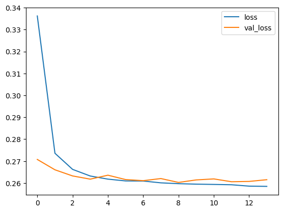
predictions = (model.predict(X_test) > 0.5).astype("int32")
print(classification_report(y_test,predictions))model2 = Sequential()
model2.add(Dense(78,activation='relu'))
model2.add(Dropout(0.7))
model2.add(Dense(39,activation='relu'))
model2.add(Dropout(0.7))
model2.add(Dense(19,activation='relu'))
model2.add(Dropout(0.7))
model2.add(Dense(1,activation='linear'))model2.compile(
loss=tf.keras.losses.BinaryCrossentropy(from_logits=True),
optimizer=tf.keras.optimizers.Adam(0.0001),
)early_stopping = EarlyStopping(monitor='val_loss',
patience=5,
restore_best_weights=True)model2.fit(X_train,
y_train,
epochs=100,
batch_size=256,
validation_data=(X_val,y_val),
callbacks=[early_stopping])Epoch 1/100
927/927 [==============================] - 3s 2ms/step - loss: 0.9819 - val_loss: 0.5578
Epoch 2/100
927/927 [==============================] - 2s 2ms/step - loss: 0.6567 - val_loss: 0.5368
Epoch 3/100
927/927 [==============================] - 2s 2ms/step - loss: 0.5728 - val_loss: 0.5007
Epoch 4/100
927/927 [==============================] - 2s 2ms/step - loss: 0.5287 - val_loss: 0.4629
Epoch 5/100
927/927 [==============================] - 2s 2ms/step - loss: 0.4945 - val_loss: 0.4288
Epoch 6/100
927/927 [==============================] - 2s 2ms/step - loss: 0.4689 - val_loss: 0.4012
Epoch 7/100
927/927 [==============================] - 2s 2ms/step - loss: 0.4458 - val_loss: 0.3803
Epoch 8/100
927/927 [==============================] - 2s 2ms/step - loss: 0.4275 - val_loss: 0.3674
Epoch 9/100
927/927 [==============================] - 2s 2ms/step - loss: 0.4092 - val_loss: 0.3529
Epoch 10/100
927/927 [==============================] - 2s 2ms/step - loss: 0.3927 - val_loss: 0.3324
Epoch 11/100
927/927 [==============================] - 2s 2ms/step - loss: 0.3787 - val_loss: 0.3084
Epoch 12/100
927/927 [==============================] - 2s 2ms/step - loss: 0.3621 - val_loss: 0.2886
Epoch 13/100
927/927 [==============================] - 2s 2ms/step - loss: 0.3517 - val_loss: 0.2777
Epoch 14/100
927/927 [==============================] - 2s 2ms/step - loss: 0.3405 - val_loss: 0.2729
Epoch 15/100
927/927 [==============================] - 2s 2ms/step - loss: 0.3329 - val_loss: 0.2710
Epoch 16/100
927/927 [==============================] - 2s 2ms/step - loss: 0.3255 - val_loss: 0.2695
Epoch 17/100
927/927 [==============================] - 2s 2ms/step - loss: 0.3189 - val_loss: 0.2684
Epoch 18/100
927/927 [==============================] - 2s 2ms/step - loss: 0.3133 - val_loss: 0.2677
Epoch 19/100
927/927 [==============================] - 2s 2ms/step - loss: 0.3096 - val_loss: 0.2672
Epoch 20/100
927/927 [==============================] - 2s 2ms/step - loss: 0.3067 - val_loss: 0.2665
Epoch 21/100
927/927 [==============================] - 2s 2ms/step - loss: 0.3036 - val_loss: 0.2659
Epoch 22/100
927/927 [==============================] - 2s 2ms/step - loss: 0.3006 - val_loss: 0.2652
Epoch 23/100
927/927 [==============================] - 2s 2ms/step - loss: 0.2981 - val_loss: 0.2646
Epoch 24/100
927/927 [==============================] - 2s 2ms/step - loss: 0.2960 - val_loss: 0.2641
Epoch 25/100
927/927 [==============================] - 2s 2ms/step - loss: 0.2948 - val_loss: 0.2633
Epoch 26/100
927/927 [==============================] - 2s 2ms/step - loss: 0.2926 - val_loss: 0.2628
Epoch 27/100
927/927 [==============================] - 2s 2ms/step - loss: 0.2910 - val_loss: 0.2626
Epoch 28/100
927/927 [==============================] - 2s 2ms/step - loss: 0.2896 - val_loss: 0.2624
Epoch 29/100
927/927 [==============================] - 2s 2ms/step - loss: 0.2883 - val_loss: 0.2624
Epoch 30/100
927/927 [==============================] - 2s 2ms/step - loss: 0.2873 - val_loss: 0.2617
Epoch 31/100
927/927 [==============================] - 2s 2ms/step - loss: 0.2866 - val_loss: 0.2617
Epoch 32/100
927/927 [==============================] - 2s 2ms/step - loss: 0.2847 - val_loss: 0.2612
Epoch 33/100
927/927 [==============================] - 2s 2ms/step - loss: 0.2847 - val_loss: 0.2611
Epoch 34/100
927/927 [==============================] - 2s 2ms/step - loss: 0.2841 - val_loss: 0.2608
Epoch 35/100
927/927 [==============================] - 2s 2ms/step - loss: 0.2827 - val_loss: 0.2606
Epoch 36/100
927/927 [==============================] - 2s 2ms/step - loss: 0.2822 - val_loss: 0.2603
Epoch 37/100
927/927 [==============================] - 2s 2ms/step - loss: 0.2816 - val_loss: 0.2605
Epoch 38/100
927/927 [==============================] - 2s 2ms/step - loss: 0.2820 - val_loss: 0.2602
Epoch 39/100
927/927 [==============================] - 2s 2ms/step - loss: 0.2805 - val_loss: 0.2600
Epoch 40/100
927/927 [==============================] - 2s 2ms/step - loss: 0.2809 - val_loss: 0.2600
Epoch 41/100
927/927 [==============================] - 2s 2ms/step - loss: 0.2810 - val_loss: 0.2601
Epoch 42/100
927/927 [==============================] - 2s 2ms/step - loss: 0.2798 - val_loss: 0.2598
Epoch 43/100
927/927 [==============================] - 2s 2ms/step - loss: 0.2796 - val_loss: 0.2598
Epoch 44/100
927/927 [==============================] - 2s 2ms/step - loss: 0.2798 - val_loss: 0.2598
Epoch 45/100
927/927 [==============================] - 2s 2ms/step - loss: 0.2795 - val_loss: 0.2596
Epoch 46/100
927/927 [==============================] - 2s 2ms/step - loss: 0.2798 - val_loss: 0.2596
Epoch 47/100
927/927 [==============================] - 2s 2ms/step - loss: 0.2789 - val_loss: 0.2593
Epoch 48/100
927/927 [==============================] - 2s 2ms/step - loss: 0.2787 - val_loss: 0.2594
Epoch 49/100
927/927 [==============================] - 2s 2ms/step - loss: 0.2777 - val_loss: 0.2591
Epoch 50/100
927/927 [==============================] - 2s 2ms/step - loss: 0.2777 - val_loss: 0.2593
Epoch 51/100
927/927 [==============================] - 2s 2ms/step - loss: 0.2781 - val_loss: 0.2592
Epoch 52/100
927/927 [==============================] - 2s 2ms/step - loss: 0.2785 - val_loss: 0.2595
Epoch 53/100
927/927 [==============================] - 2s 2ms/step - loss: 0.2774 - val_loss: 0.2590
Epoch 54/100
927/927 [==============================] - 2s 2ms/step - loss: 0.2776 - val_loss: 0.2592
Epoch 55/100
927/927 [==============================] - 2s 2ms/step - loss: 0.2768 - val_loss: 0.2592
Epoch 56/100
927/927 [==============================] - 2s 2ms/step - loss: 0.2770 - val_loss: 0.2590
Epoch 57/100
927/927 [==============================] - 2s 2ms/step - loss: 0.2767 - val_loss: 0.2591
Epoch 58/100
927/927 [==============================] - 2s 2ms/step - loss: 0.2767 - val_loss: 0.2588
Epoch 59/100
927/927 [==============================] - 2s 2ms/step - loss: 0.2767 - val_loss: 0.2587
Epoch 60/100
927/927 [==============================] - 2s 2ms/step - loss: 0.2776 - val_loss: 0.2587
Epoch 61/100
927/927 [==============================] - 2s 2ms/step - loss: 0.2769 - val_loss: 0.2586
Epoch 62/100
927/927 [==============================] - 2s 2ms/step - loss: 0.2759 - val_loss: 0.2585
Epoch 63/100
927/927 [==============================] - 2s 2ms/step - loss: 0.2759 - val_loss: 0.2584
Epoch 64/100
927/927 [==============================] - 2s 2ms/step - loss: 0.2759 - val_loss: 0.2584
Epoch 65/100
927/927 [==============================] - 2s 2ms/step - loss: 0.2755 - val_loss: 0.2585
Epoch 66/100
927/927 [==============================] - 2s 2ms/step - loss: 0.2756 - val_loss: 0.2584
Epoch 67/100
927/927 [==============================] - 2s 2ms/step - loss: 0.2753 - val_loss: 0.2583
Epoch 68/100
927/927 [==============================] - 2s 2ms/step - loss: 0.2750 - val_loss: 0.2585
Epoch 69/100
927/927 [==============================] - 2s 2ms/step - loss: 0.2754 - val_loss: 0.2582
Epoch 70/100
927/927 [==============================] - 2s 2ms/step - loss: 0.2749 - val_loss: 0.2583
Epoch 71/100
927/927 [==============================] - 2s 2ms/step - loss: 0.2749 - val_loss: 0.2585
Epoch 72/100
927/927 [==============================] - 2s 2ms/step - loss: 0.2750 - val_loss: 0.2584
Epoch 73/100
927/927 [==============================] - 2s 2ms/step - loss: 0.2748 - val_loss: 0.2583
Epoch 74/100
927/927 [==============================] - 2s 2ms/step - loss: 0.2738 - val_loss: 0.2580
Epoch 75/100
927/927 [==============================] - 2s 2ms/step - loss: 0.2745 - val_loss: 0.2581
Epoch 76/100
927/927 [==============================] - 2s 2ms/step - loss: 0.2754 - val_loss: 0.2581
Epoch 77/100
927/927 [==============================] - 2s 2ms/step - loss: 0.2740 - val_loss: 0.2582
Epoch 78/100
927/927 [==============================] - 2s 2ms/step - loss: 0.2738 - val_loss: 0.2581
Epoch 79/100
927/927 [==============================] - 2s 2ms/step - loss: 0.2749 - val_loss: 0.2581
Epoch 80/100
927/927 [==============================] - 2s 2ms/step - loss: 0.2746 - val_loss: 0.2584
Epoch 81/100
927/927 [==============================] - 2s 2ms/step - loss: 0.2741 - val_loss: 0.2581
Epoch 82/100
927/927 [==============================] - 2s 2ms/step - loss: 0.2733 - val_loss: 0.2579
Epoch 83/100
927/927 [==============================] - 2s 2ms/step - loss: 0.2733 - val_loss: 0.2579
Epoch 84/100
927/927 [==============================] - 2s 2ms/step - loss: 0.2730 - val_loss: 0.2579
Epoch 85/100
927/927 [==============================] - 2s 2ms/step - loss: 0.2735 - val_loss: 0.2579
Epoch 86/100
927/927 [==============================] - 2s 2ms/step - loss: 0.2735 - val_loss: 0.2578
Epoch 87/100
927/927 [==============================] - 2s 2ms/step - loss: 0.2736 - val_loss: 0.2577
Epoch 88/100
927/927 [==============================] - 2s 2ms/step - loss: 0.2733 - val_loss: 0.2579
Epoch 89/100
927/927 [==============================] - 2s 2ms/step - loss: 0.2733 - val_loss: 0.2577
Epoch 90/100
927/927 [==============================] - 2s 2ms/step - loss: 0.2736 - val_loss: 0.2577
Epoch 91/100
927/927 [==============================] - 2s 2ms/step - loss: 0.2729 - val_loss: 0.2578
Epoch 92/100
927/927 [==============================] - 2s 2ms/step - loss: 0.2733 - val_loss: 0.2578
Epoch 93/100
927/927 [==============================] - 2s 2ms/step - loss: 0.2732 - val_loss: 0.2578
Epoch 94/100
927/927 [==============================] - 2s 2ms/step - loss: 0.2731 - val_loss: 0.2577
Epoch 95/100
927/927 [==============================] - 2s 2ms/step - loss: 0.2729 - val_loss: 0.2577
Epoch 96/100
927/927 [==============================] - 2s 2ms/step - loss: 0.2728 - val_loss: 0.2579
Epoch 97/100
927/927 [==============================] - 2s 2ms/step - loss: 0.2737 - val_loss: 0.2577
Epoch 98/100
927/927 [==============================] - 2s 3ms/step - loss: 0.2726 - val_loss: 0.2577
Epoch 99/100
927/927 [==============================] - 2s 2ms/step - loss: 0.2721 - val_loss: 0.2574
Epoch 100/100
927/927 [==============================] - 2s 2ms/step - loss: 0.2735 - val_loss: 0.2577<keras.src.callbacks.History at 0x21f06edf710>losses = pd.DataFrame(model2.history.history)
losses.head()| loss | val_loss | |
|---|---|---|
| 0 | 0.981942 | 0.557821 |
| 1 | 0.656682 | 0.536773 |
| 2 | 0.572845 | 0.500686 |
| 3 | 0.528722 | 0.462937 |
| 4 | 0.494528 | 0.428844 |
losses.plot()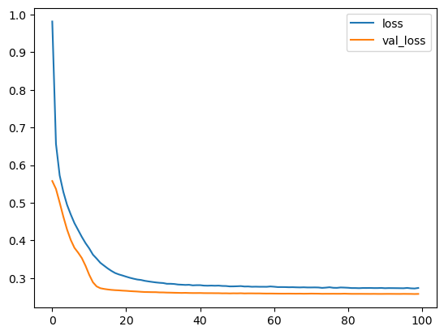
predictions = (model2.predict(X_test) > 0.5).astype("int32")
print(classification_report(y_test,predictions))2471/2471 [==============================] - 2s 731us/step
precision recall f1-score support
0 0.99 0.44 0.61 15421
1 0.88 1.00 0.94 63623
accuracy 0.89 79044
macro avg 0.94 0.72 0.77 79044
weighted avg 0.90 0.89 0.87 79044
Model 3 - More complicated Architecture
model3 = Sequential()
model3.add(Dense(78,activation='relu'))
model3.add(Dropout(0.7))
model3.add(Dense(250,activation='relu'))
model3.add(Dropout(0.7))
model3.add(Dense(125,activation='relu'))
model3.add(Dropout(0.7))
model3.add(Dense(60,activation='relu'))
model3.add(Dropout(0.7))
model3.add(Dense(1,activation='linear'))model3.compile(
loss=tf.keras.losses.BinaryCrossentropy(from_logits=True),
optimizer=tf.keras.optimizers.Adam(0.0001),
)early_stopping = EarlyStopping(monitor='val_loss',
patience=5,
restore_best_weights=True)model3.fit(X_train,
y_train,
epochs=25,
batch_size=256,
validation_data=(X_val,y_val),
callbacks=[early_stopping])Epoch 1/100
927/927 [==============================] - 5s 4ms/step - loss: 0.8082 - val_loss: 0.6075
Epoch 2/100
927/927 [==============================] - 4s 4ms/step - loss: 0.5898 - val_loss: 0.5811
Epoch 3/100
927/927 [==============================] - 4s 4ms/step - loss: 0.5416 - val_loss: 0.5447
Epoch 4/100
927/927 [==============================] - 4s 4ms/step - loss: 0.5056 - val_loss: 0.4886
Epoch 5/100
927/927 [==============================] - 4s 4ms/step - loss: 0.4703 - val_loss: 0.4320
Epoch 6/100
927/927 [==============================] - 4s 4ms/step - loss: 0.4390 - val_loss: 0.3934
Epoch 7/100
927/927 [==============================] - 4s 4ms/step - loss: 0.4113 - val_loss: 0.3583
Epoch 8/100
927/927 [==============================] - 4s 4ms/step - loss: 0.3803 - val_loss: 0.3202
Epoch 9/100
927/927 [==============================] - 4s 4ms/step - loss: 0.3522 - val_loss: 0.2925
Epoch 10/100
927/927 [==============================] - 4s 4ms/step - loss: 0.3321 - val_loss: 0.2872
Epoch 11/100
927/927 [==============================] - 4s 4ms/step - loss: 0.3205 - val_loss: 0.2821
Epoch 12/100
927/927 [==============================] - 4s 4ms/step - loss: 0.3111 - val_loss: 0.2804
Epoch 13/100
927/927 [==============================] - 4s 4ms/step - loss: 0.3043 - val_loss: 0.2772
Epoch 14/100
927/927 [==============================] - 4s 4ms/step - loss: 0.3002 - val_loss: 0.2751
Epoch 15/100
927/927 [==============================] - 4s 4ms/step - loss: 0.2954 - val_loss: 0.2744
Epoch 16/100
927/927 [==============================] - 4s 4ms/step - loss: 0.2909 - val_loss: 0.2726
Epoch 17/100
927/927 [==============================] - 4s 4ms/step - loss: 0.2886 - val_loss: 0.2724
Epoch 18/100
927/927 [==============================] - 4s 4ms/step - loss: 0.2858 - val_loss: 0.2715
Epoch 19/100
927/927 [==============================] - 4s 4ms/step - loss: 0.2831 - val_loss: 0.2697
Epoch 20/100
927/927 [==============================] - 4s 4ms/step - loss: 0.2822 - val_loss: 0.2709
Epoch 21/100
927/927 [==============================] - 4s 4ms/step - loss: 0.2797 - val_loss: 0.2708
Epoch 22/100
927/927 [==============================] - 4s 4ms/step - loss: 0.2780 - val_loss: 0.2699
Epoch 23/100
927/927 [==============================] - 4s 4ms/step - loss: 0.2767 - val_loss: 0.2693
Epoch 24/100
927/927 [==============================] - 4s 4ms/step - loss: 0.2767 - val_loss: 0.2701
Epoch 25/100
927/927 [==============================] - 4s 4ms/step - loss: 0.2747 - val_loss: 0.2689
Epoch 26/100
927/927 [==============================] - 4s 4ms/step - loss: 0.2735 - val_loss: 0.2687
Epoch 27/100
927/927 [==============================] - 4s 4ms/step - loss: 0.2724 - val_loss: 0.2682
Epoch 28/100
927/927 [==============================] - 4s 4ms/step - loss: 0.2714 - val_loss: 0.2685
Epoch 29/100
927/927 [==============================] - 4s 4ms/step - loss: 0.2705 - val_loss: 0.2689
Epoch 30/100
927/927 [==============================] - 4s 4ms/step - loss: 0.2703 - val_loss: 0.2673
Epoch 31/100
927/927 [==============================] - 4s 4ms/step - loss: 0.2701 - val_loss: 0.2678
Epoch 32/100
927/927 [==============================] - 4s 4ms/step - loss: 0.2694 - val_loss: 0.2667
Epoch 33/100
927/927 [==============================] - 4s 4ms/step - loss: 0.2688 - val_loss: 0.2671
Epoch 34/100
927/927 [==============================] - 4s 4ms/step - loss: 0.2683 - val_loss: 0.2669
Epoch 35/100
927/927 [==============================] - 4s 4ms/step - loss: 0.2677 - val_loss: 0.2664
Epoch 36/100
927/927 [==============================] - 4s 4ms/step - loss: 0.2674 - val_loss: 0.2669
Epoch 37/100
927/927 [==============================] - 4s 4ms/step - loss: 0.2666 - val_loss: 0.2661
Epoch 38/100
927/927 [==============================] - 4s 4ms/step - loss: 0.2665 - val_loss: 0.2658
Epoch 39/100
927/927 [==============================] - 4s 5ms/step - loss: 0.2658 - val_loss: 0.2658
Epoch 40/100
927/927 [==============================] - 4s 4ms/step - loss: 0.2661 - val_loss: 0.2654
Epoch 41/100
927/927 [==============================] - 4s 4ms/step - loss: 0.2652 - val_loss: 0.2661
Epoch 42/100
927/927 [==============================] - 4s 4ms/step - loss: 0.2651 - val_loss: 0.2655
Epoch 43/100
927/927 [==============================] - 4s 5ms/step - loss: 0.2643 - val_loss: 0.2654
Epoch 44/100
927/927 [==============================] - 4s 4ms/step - loss: 0.2648 - val_loss: 0.2658
Epoch 45/100
927/927 [==============================] - 4s 4ms/step - loss: 0.2648 - val_loss: 0.2651
Epoch 46/100
927/927 [==============================] - 4s 4ms/step - loss: 0.2644 - val_loss: 0.2653
Epoch 47/100
927/927 [==============================] - 4s 4ms/step - loss: 0.2644 - val_loss: 0.2644
Epoch 48/100
927/927 [==============================] - 4s 4ms/step - loss: 0.2634 - val_loss: 0.2647
Epoch 49/100
927/927 [==============================] - 4s 4ms/step - loss: 0.2639 - val_loss: 0.2644
Epoch 50/100
927/927 [==============================] - 4s 4ms/step - loss: 0.2637 - val_loss: 0.2642
Epoch 51/100
927/927 [==============================] - 4s 5ms/step - loss: 0.2629 - val_loss: 0.2644
Epoch 52/100
927/927 [==============================] - 4s 4ms/step - loss: 0.2630 - val_loss: 0.2639
Epoch 53/100
927/927 [==============================] - 4s 4ms/step - loss: 0.2628 - val_loss: 0.2641
Epoch 54/100
927/927 [==============================] - 4s 4ms/step - loss: 0.2630 - val_loss: 0.2641
Epoch 55/100
927/927 [==============================] - 4s 4ms/step - loss: 0.2629 - val_loss: 0.2637
Epoch 56/100
927/927 [==============================] - 4s 4ms/step - loss: 0.2621 - val_loss: 0.2639
Epoch 57/100
927/927 [==============================] - 4s 4ms/step - loss: 0.2623 - val_loss: 0.2639
Epoch 58/100
927/927 [==============================] - 4s 4ms/step - loss: 0.2625 - val_loss: 0.2637
Epoch 59/100
927/927 [==============================] - 4s 4ms/step - loss: 0.2627 - val_loss: 0.2635
Epoch 60/100
927/927 [==============================] - 4s 4ms/step - loss: 0.2620 - val_loss: 0.2638
Epoch 61/100
927/927 [==============================] - 4s 4ms/step - loss: 0.2621 - val_loss: 0.2638
Epoch 62/100
927/927 [==============================] - 4s 4ms/step - loss: 0.2623 - val_loss: 0.2641
Epoch 63/100
927/927 [==============================] - 4s 4ms/step - loss: 0.2619 - val_loss: 0.2629
Epoch 64/100
927/927 [==============================] - 4s 4ms/step - loss: 0.2618 - val_loss: 0.2634
Epoch 65/100
927/927 [==============================] - 4s 5ms/step - loss: 0.2615 - val_loss: 0.2629
Epoch 66/100
927/927 [==============================] - 4s 4ms/step - loss: 0.2621 - val_loss: 0.2635
Epoch 67/100
927/927 [==============================] - 4s 4ms/step - loss: 0.2619 - val_loss: 0.2627
Epoch 68/100
927/927 [==============================] - 4s 4ms/step - loss: 0.2616 - val_loss: 0.2629
Epoch 69/100
927/927 [==============================] - 4s 4ms/step - loss: 0.2611 - val_loss: 0.2627
Epoch 70/100
927/927 [==============================] - 4s 4ms/step - loss: 0.2612 - val_loss: 0.2628
Epoch 71/100
927/927 [==============================] - 4s 4ms/step - loss: 0.2611 - val_loss: 0.2636
Epoch 72/100
927/927 [==============================] - 4s 4ms/step - loss: 0.2611 - val_loss: 0.2627
Epoch 73/100
927/927 [==============================] - 4s 4ms/step - loss: 0.2612 - val_loss: 0.2629
Epoch 74/100
927/927 [==============================] - 4s 4ms/step - loss: 0.2612 - val_loss: 0.2629
Epoch 75/100
927/927 [==============================] - 4s 4ms/step - loss: 0.2610 - val_loss: 0.2628
Epoch 76/100
927/927 [==============================] - 4s 4ms/step - loss: 0.2606 - val_loss: 0.2625
Epoch 77/100
927/927 [==============================] - 4s 4ms/step - loss: 0.2610 - val_loss: 0.2629
Epoch 78/100
927/927 [==============================] - 4s 4ms/step - loss: 0.2603 - val_loss: 0.2630
Epoch 79/100
927/927 [==============================] - 4s 4ms/step - loss: 0.2605 - val_loss: 0.2619
Epoch 80/100
927/927 [==============================] - 4s 4ms/step - loss: 0.2604 - val_loss: 0.2622
Epoch 81/100
927/927 [==============================] - 4s 5ms/step - loss: 0.2605 - val_loss: 0.2618
Epoch 82/100
927/927 [==============================] - 4s 4ms/step - loss: 0.2604 - val_loss: 0.2628
Epoch 83/100
927/927 [==============================] - 4s 4ms/step - loss: 0.2605 - val_loss: 0.2620
Epoch 84/100
927/927 [==============================] - 4s 4ms/step - loss: 0.2607 - val_loss: 0.2623
Epoch 85/100
927/927 [==============================] - 4s 4ms/step - loss: 0.2602 - val_loss: 0.2625
Epoch 86/100
927/927 [==============================] - 4s 4ms/step - loss: 0.2602 - val_loss: 0.2613
Epoch 87/100
927/927 [==============================] - 4s 4ms/step - loss: 0.2602 - val_loss: 0.2619
Epoch 88/100
927/927 [==============================] - 4s 4ms/step - loss: 0.2607 - val_loss: 0.2620
Epoch 89/100
927/927 [==============================] - 4s 4ms/step - loss: 0.2600 - val_loss: 0.2618
Epoch 90/100
927/927 [==============================] - 4s 4ms/step - loss: 0.2600 - val_loss: 0.2615
Epoch 91/100
927/927 [==============================] - 4s 4ms/step - loss: 0.2599 - val_loss: 0.2626
Epoch 92/100
927/927 [==============================] - 4s 4ms/step - loss: 0.2603 - val_loss: 0.2622
Epoch 93/100
927/927 [==============================] - 4s 4ms/step - loss: 0.2601 - val_loss: 0.2620
Epoch 94/100
927/927 [==============================] - 4s 4ms/step - loss: 0.2601 - val_loss: 0.2621
Epoch 95/100
927/927 [==============================] - 4s 4ms/step - loss: 0.2602 - val_loss: 0.2628
Epoch 96/100
927/927 [==============================] - 4s 4ms/step - loss: 0.2599 - val_loss: 0.2624<keras.src.callbacks.History at 0x21f08b01c50>losses3 = pd.DataFrame(model3.history.history)
losses3.plot()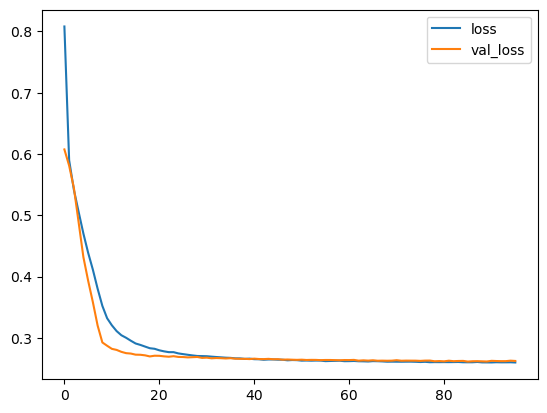
Model 4 - Leaky ReLU
model4 = Sequential()
model4.add(Dense(78))
model4.add(LeakyReLU(alpha=0.01))
model4.add(Dropout(0.7))
model4.add(Dense(39))
model4.add(LeakyReLU(alpha=0.01))
model4.add(Dropout(0.7))
model4.add(Dense(19))
model4.add(LeakyReLU(alpha=0.01))
model4.add(Dropout(0.7))
model4.add(Dense(1,activation='linear'))model4.compile(
loss=tf.keras.losses.BinaryCrossentropy(from_logits=True),
optimizer=tf.keras.optimizers.Adam(0.0001),
)early_stopping = EarlyStopping(monitor='val_loss',
patience=10,
restore_best_weights=True)model4.fit(X_train,
y_train,
epochs=100,
batch_size=256,
validation_data=(X_val,y_val),
callbacks=[early_stopping])Epoch 1/100
927/927 [==============================] - 3s 2ms/step - loss: 0.8590 - val_loss: 0.5786
Epoch 2/100
927/927 [==============================] - 2s 2ms/step - loss: 0.6239 - val_loss: 0.5416
Epoch 3/100
927/927 [==============================] - 2s 2ms/step - loss: 0.5620 - val_loss: 0.4985
Epoch 4/100
927/927 [==============================] - 2s 2ms/step - loss: 0.5214 - val_loss: 0.4565
Epoch 5/100
927/927 [==============================] - 2s 2ms/step - loss: 0.4853 - val_loss: 0.4168
Epoch 6/100
927/927 [==============================] - 2s 2ms/step - loss: 0.4620 - val_loss: 0.3930
Epoch 7/100
927/927 [==============================] - 2s 2ms/step - loss: 0.4383 - val_loss: 0.3738
Epoch 8/100
927/927 [==============================] - 2s 2ms/step - loss: 0.4208 - val_loss: 0.3546
Epoch 9/100
927/927 [==============================] - 2s 2ms/step - loss: 0.4002 - val_loss: 0.3308
Epoch 10/100
927/927 [==============================] - 2s 2ms/step - loss: 0.3818 - val_loss: 0.3044
Epoch 11/100
927/927 [==============================] - 2s 2ms/step - loss: 0.3649 - val_loss: 0.2858
Epoch 12/100
927/927 [==============================] - 2s 2ms/step - loss: 0.3514 - val_loss: 0.2764
Epoch 13/100
927/927 [==============================] - 2s 2ms/step - loss: 0.3389 - val_loss: 0.2719
Epoch 14/100
927/927 [==============================] - 2s 2ms/step - loss: 0.3301 - val_loss: 0.2699
Epoch 15/100
927/927 [==============================] - 2s 2ms/step - loss: 0.3211 - val_loss: 0.2680
Epoch 16/100
927/927 [==============================] - 2s 2ms/step - loss: 0.3159 - val_loss: 0.2671
Epoch 17/100
927/927 [==============================] - 2s 2ms/step - loss: 0.3102 - val_loss: 0.2660
Epoch 18/100
927/927 [==============================] - 2s 2ms/step - loss: 0.3041 - val_loss: 0.2652
Epoch 19/100
927/927 [==============================] - 2s 2ms/step - loss: 0.3018 - val_loss: 0.2643
Epoch 20/100
927/927 [==============================] - 2s 2ms/step - loss: 0.2979 - val_loss: 0.2638
Epoch 21/100
927/927 [==============================] - 2s 2ms/step - loss: 0.2949 - val_loss: 0.2626
Epoch 22/100
927/927 [==============================] - 2s 2ms/step - loss: 0.2928 - val_loss: 0.2622
Epoch 23/100
927/927 [==============================] - 2s 2ms/step - loss: 0.2903 - val_loss: 0.2618
Epoch 24/100
927/927 [==============================] - 2s 2ms/step - loss: 0.2885 - val_loss: 0.2616
Epoch 25/100
927/927 [==============================] - 2s 2ms/step - loss: 0.2864 - val_loss: 0.2612
Epoch 26/100
927/927 [==============================] - 2s 2ms/step - loss: 0.2848 - val_loss: 0.2610
Epoch 27/100
927/927 [==============================] - 2s 2ms/step - loss: 0.2843 - val_loss: 0.2608
Epoch 28/100
927/927 [==============================] - 2s 2ms/step - loss: 0.2837 - val_loss: 0.2606
Epoch 29/100
927/927 [==============================] - 2s 2ms/step - loss: 0.2821 - val_loss: 0.2603
Epoch 30/100
927/927 [==============================] - 2s 2ms/step - loss: 0.2814 - val_loss: 0.2603
Epoch 31/100
927/927 [==============================] - 2s 2ms/step - loss: 0.2811 - val_loss: 0.2600
Epoch 32/100
927/927 [==============================] - 2s 2ms/step - loss: 0.2795 - val_loss: 0.2596
Epoch 33/100
927/927 [==============================] - 2s 2ms/step - loss: 0.2790 - val_loss: 0.2596
Epoch 34/100
927/927 [==============================] - 2s 2ms/step - loss: 0.2792 - val_loss: 0.2595
Epoch 35/100
927/927 [==============================] - 2s 2ms/step - loss: 0.2776 - val_loss: 0.2593
Epoch 36/100
927/927 [==============================] - 2s 2ms/step - loss: 0.2769 - val_loss: 0.2591
Epoch 37/100
927/927 [==============================] - 2s 2ms/step - loss: 0.2779 - val_loss: 0.2593
Epoch 38/100
927/927 [==============================] - 2s 2ms/step - loss: 0.2758 - val_loss: 0.2590
Epoch 39/100
927/927 [==============================] - 2s 2ms/step - loss: 0.2759 - val_loss: 0.2588
Epoch 40/100
927/927 [==============================] - 2s 2ms/step - loss: 0.2758 - val_loss: 0.2587
Epoch 41/100
927/927 [==============================] - 2s 2ms/step - loss: 0.2753 - val_loss: 0.2586
Epoch 42/100
927/927 [==============================] - 2s 2ms/step - loss: 0.2744 - val_loss: 0.2587
Epoch 43/100
927/927 [==============================] - 2s 2ms/step - loss: 0.2745 - val_loss: 0.2585
Epoch 44/100
927/927 [==============================] - 2s 2ms/step - loss: 0.2737 - val_loss: 0.2584
Epoch 45/100
927/927 [==============================] - 2s 2ms/step - loss: 0.2743 - val_loss: 0.2583
Epoch 46/100
927/927 [==============================] - 2s 2ms/step - loss: 0.2734 - val_loss: 0.2584
Epoch 47/100
927/927 [==============================] - 2s 2ms/step - loss: 0.2734 - val_loss: 0.2582
Epoch 48/100
927/927 [==============================] - 2s 2ms/step - loss: 0.2729 - val_loss: 0.2580
Epoch 49/100
927/927 [==============================] - 2s 2ms/step - loss: 0.2732 - val_loss: 0.2581
Epoch 50/100
927/927 [==============================] - 2s 2ms/step - loss: 0.2728 - val_loss: 0.2580
Epoch 51/100
927/927 [==============================] - 2s 2ms/step - loss: 0.2716 - val_loss: 0.2578
Epoch 52/100
927/927 [==============================] - 2s 2ms/step - loss: 0.2717 - val_loss: 0.2579
Epoch 53/100
927/927 [==============================] - 2s 2ms/step - loss: 0.2716 - val_loss: 0.2578
Epoch 54/100
927/927 [==============================] - 2s 2ms/step - loss: 0.2714 - val_loss: 0.2578
Epoch 55/100
927/927 [==============================] - 2s 2ms/step - loss: 0.2704 - val_loss: 0.2578
Epoch 56/100
927/927 [==============================] - 2s 2ms/step - loss: 0.2708 - val_loss: 0.2578
Epoch 57/100
927/927 [==============================] - 2s 2ms/step - loss: 0.2711 - val_loss: 0.2576
Epoch 58/100
927/927 [==============================] - 2s 2ms/step - loss: 0.2705 - val_loss: 0.2576
Epoch 59/100
927/927 [==============================] - 2s 2ms/step - loss: 0.2702 - val_loss: 0.2576
Epoch 60/100
927/927 [==============================] - 2s 2ms/step - loss: 0.2702 - val_loss: 0.2577
Epoch 61/100
927/927 [==============================] - 2s 2ms/step - loss: 0.2699 - val_loss: 0.2578
Epoch 62/100
927/927 [==============================] - 2s 2ms/step - loss: 0.2692 - val_loss: 0.2575
Epoch 63/100
927/927 [==============================] - 2s 2ms/step - loss: 0.2694 - val_loss: 0.2576
Epoch 64/100
927/927 [==============================] - 2s 2ms/step - loss: 0.2698 - val_loss: 0.2579
Epoch 65/100
927/927 [==============================] - 2s 2ms/step - loss: 0.2692 - val_loss: 0.2577
Epoch 66/100
927/927 [==============================] - 2s 2ms/step - loss: 0.2691 - val_loss: 0.2575
Epoch 67/100
927/927 [==============================] - 2s 2ms/step - loss: 0.2691 - val_loss: 0.2576
Epoch 68/100
927/927 [==============================] - 2s 2ms/step - loss: 0.2684 - val_loss: 0.2576
Epoch 69/100
927/927 [==============================] - 2s 2ms/step - loss: 0.2684 - val_loss: 0.2576
Epoch 70/100
927/927 [==============================] - 2s 2ms/step - loss: 0.2680 - val_loss: 0.2575
Epoch 71/100
927/927 [==============================] - 2s 2ms/step - loss: 0.2681 - val_loss: 0.2574
Epoch 72/100
927/927 [==============================] - 2s 2ms/step - loss: 0.2687 - val_loss: 0.2575
Epoch 73/100
927/927 [==============================] - 2s 2ms/step - loss: 0.2671 - val_loss: 0.2574
Epoch 74/100
927/927 [==============================] - 2s 2ms/step - loss: 0.2672 - val_loss: 0.2573
Epoch 75/100
927/927 [==============================] - 2s 2ms/step - loss: 0.2680 - val_loss: 0.2574
Epoch 76/100
927/927 [==============================] - 2s 2ms/step - loss: 0.2673 - val_loss: 0.2572
Epoch 77/100
927/927 [==============================] - 2s 2ms/step - loss: 0.2665 - val_loss: 0.2576
Epoch 78/100
927/927 [==============================] - 2s 2ms/step - loss: 0.2676 - val_loss: 0.2578
Epoch 79/100
927/927 [==============================] - 2s 2ms/step - loss: 0.2669 - val_loss: 0.2576
Epoch 80/100
927/927 [==============================] - 2s 2ms/step - loss: 0.2668 - val_loss: 0.2572
Epoch 81/100
927/927 [==============================] - 2s 2ms/step - loss: 0.2671 - val_loss: 0.2574
Epoch 82/100
927/927 [==============================] - 2s 2ms/step - loss: 0.2672 - val_loss: 0.2576
Epoch 83/100
927/927 [==============================] - 2s 2ms/step - loss: 0.2661 - val_loss: 0.2574
Epoch 84/100
927/927 [==============================] - 2s 2ms/step - loss: 0.2668 - val_loss: 0.2575
Epoch 85/100
927/927 [==============================] - 2s 2ms/step - loss: 0.2664 - val_loss: 0.2574
Epoch 86/100
927/927 [==============================] - 2s 2ms/step - loss: 0.2667 - val_loss: 0.2577<keras.src.callbacks.History at 0x21f0cff9c50>losses4 = pd.DataFrame(model3.history.history)
losses4.plot()
Model 5 - Class Weights
class_weights = compute_class_weight('balanced', classes=np.unique(y_train), y=y_train)
class_weight_dict = dict(enumerate(class_weights))model = Sequential()
model.add(Dense(78, activation='relu'))
model.add(Dropout(0.2))
model.add(Dense(256, activation='relu'))
model.add(Dropout(0.2))
model.add(Dense(128, activation='relu'))
model.add(Dropout(0.2))
model.add(Dense(64, activation='relu'))
model.add(Dropout(0.2))
model.add(Dense(1, activation='linear'))model.compile(
loss=tf.keras.losses.BinaryCrossentropy(from_logits=True),
optimizer=Adam(0.0001),
)early_stopping = EarlyStopping(
monitor='val_loss',
patience=5,
restore_best_weights=True
)model.fit(
X_train,
y_train,
epochs=25,
batch_size=256,
validation_data=(X_val, y_val),
callbacks=[early_stopping],
class_weight=class_weight_dict
)Epoch 1/25
927/927 [==============================] - 5s 4ms/step - loss: 0.5085 - val_loss: 0.3829
Epoch 2/25
927/927 [==============================] - 4s 4ms/step - loss: 0.4166 - val_loss: 0.3687
Epoch 3/25
927/927 [==============================] - 4s 4ms/step - loss: 0.3966 - val_loss: 0.3713
Epoch 4/25
927/927 [==============================] - 4s 4ms/step - loss: 0.3839 - val_loss: 0.3628
Epoch 5/25
927/927 [==============================] - 4s 4ms/step - loss: 0.3782 - val_loss: 0.3659
Epoch 6/25
927/927 [==============================] - 4s 4ms/step - loss: 0.3732 - val_loss: 0.3597
Epoch 7/25
927/927 [==============================] - 4s 4ms/step - loss: 0.3693 - val_loss: 0.3593
Epoch 8/25
927/927 [==============================] - 4s 4ms/step - loss: 0.3662 - val_loss: 0.3529
Epoch 9/25
927/927 [==============================] - 4s 4ms/step - loss: 0.3653 - val_loss: 0.3514
Epoch 10/25
927/927 [==============================] - 4s 4ms/step - loss: 0.3624 - val_loss: 0.3576
Epoch 11/25
927/927 [==============================] - 4s 4ms/step - loss: 0.3613 - val_loss: 0.3579
Epoch 12/25
927/927 [==============================] - 4s 4ms/step - loss: 0.3604 - val_loss: 0.3497
Epoch 13/25
927/927 [==============================] - 4s 4ms/step - loss: 0.3598 - val_loss: 0.3492
Epoch 14/25
927/927 [==============================] - 4s 4ms/step - loss: 0.3589 - val_loss: 0.3566
Epoch 15/25
927/927 [==============================] - 4s 4ms/step - loss: 0.3581 - val_loss: 0.3513
Epoch 16/25
927/927 [==============================] - 4s 4ms/step - loss: 0.3578 - val_loss: 0.3554
Epoch 17/25
927/927 [==============================] - 4s 4ms/step - loss: 0.3575 - val_loss: 0.3460
Epoch 18/25
927/927 [==============================] - 4s 4ms/step - loss: 0.3565 - val_loss: 0.3480
Epoch 19/25
927/927 [==============================] - 4s 4ms/step - loss: 0.3563 - val_loss: 0.3478
Epoch 20/25
927/927 [==============================] - 4s 4ms/step - loss: 0.3562 - val_loss: 0.3446
Epoch 21/25
927/927 [==============================] - 3s 4ms/step - loss: 0.3554 - val_loss: 0.3486
Epoch 22/25
927/927 [==============================] - 3s 4ms/step - loss: 0.3554 - val_loss: 0.3484
Epoch 23/25
927/927 [==============================] - 4s 4ms/step - loss: 0.3548 - val_loss: 0.3517
Epoch 24/25
927/927 [==============================] - 4s 4ms/step - loss: 0.3548 - val_loss: 0.3480
Epoch 25/25
927/927 [==============================] - 3s 4ms/step - loss: 0.3543 - val_loss: 0.3485<keras.src.callbacks.History at 0x1b91892c350>losses = pd.DataFrame(model.history.history)
losses.plot()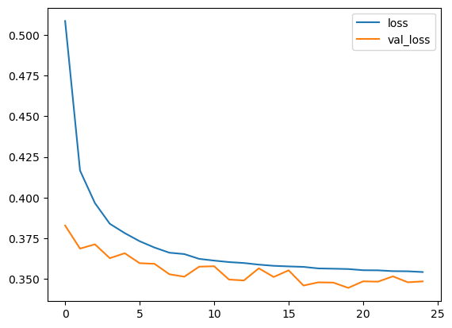
predictions = (model.predict(X_test) > 0.5).astype("int32")
print(classification_report(y_test,predictions))2471/2471 [==============================] - 2s 795us/step
precision recall f1-score support
0 0.41 0.91 0.56 15516
1 0.97 0.68 0.80 63528
accuracy 0.72 79044
macro avg 0.69 0.79 0.68 79044
weighted avg 0.86 0.72 0.75 79044